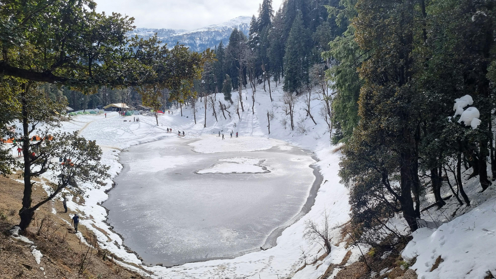
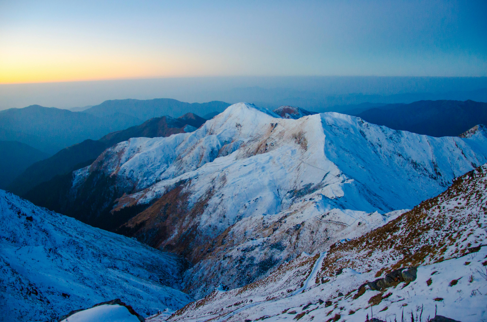

Popular Treks

Kedarkantha Trek
Easy to Moderate
5-6 days
Dec-Apr
3,810 m
Popular winter trek offering snow-covered landscapes and a 360-degree summit view of major Himalayan peaks. The trek passes through beautiful forests, meadows, and traditional Himalayan villages.
View Details
Valley of Flowers
Moderate
6-7 days
Jul-Sep
3,658 m
UNESCO World Heritage site with rare Himalayan flora blooming in monsoon season. The valley transforms into a colorful carpet of alpine flowers against the backdrop of snow-capped mountains.
View Details

Roopkund Trek
Difficult
7-8 days
May-Jun, Sep-Oct
4,785 m
A mysterious glacial lake surrounded by human skeletons and towering peaks. The trek offers diverse landscapes from dense forests to alpine meadows and finally the desolate high-altitude terrain.
View Details